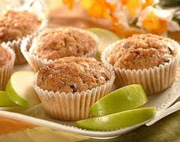

Muffin Integral con Huevo

Ingredientes
- 1 pan muffin integral
- 1 huevo
- 1 rebanada de jamón o pavo
- 1 rebanada de queso
- Espinacas (opcional)
Preparación
Abre el muffin, coloca huevo cocido, jamón, queso y espinaca. Calienta en sartén o microondas hasta que el queso derrita.